SAR detection review
All 939 labeled holdout images, confidence ≥ 0.3, matching IoU ≥ 0.5.
Diagnostic counts use greedy class-aware matching; they are not COCO mAP. A missed object here may have a prediction below the selected confidence threshold.
Model objects matched missed missed small wrong class duplicate localization background TerraMind 3281 2436 845 595 0 189 1310 1762 ViT_loss1 3281 2341 940 625 0 160 1298 1498 ViT_loss2 3281 2350 931 629 1 155 1404 1764
Saved COCO AP by class These AP scores come from each run's full validation evaluation; the gallery confidence filter does not change them.
Class TerraMind AP (%) ViT_loss1 AP (%) ViT_loss2 AP (%) aircraft 41.04 34.51 37.99 airport 49.36 48.27 51.87 bridge 3.19 2.19 2.10 car 56.02 50.54 49.79 harbor 45.18 45.08 46.46 oil_tank 44.12 40.50 40.19 playground 2.88 3.75 3.48 ship 39.04 33.56 32.26 wind_turbine 39.04 36.27 36.82
The first panel shows only the correct annotations, with every box in green. The model panels add predictions and mark annotation matches using the following legend.
Green: matched ground truth · Orange: unmatched ground truth ·
Blue: matching prediction · Yellow: duplicate ·
Purple: inaccurate location · Red: wrong class / background
Small = area below one 16×16 patch after resizing to 512×512. Every ground-truth box is drawn; at most 20 predictions are drawn per panel. Summary counts include all eligible predictions. Examples are selected for errors and class coverage.
Class All aircraft airport bridge car harbor oil_tank playground ship wind_turbine
Error All Missed small objects
Missed objects Wrong class Duplicates
Inaccurate boxes Image 1065: airport — 1 objects images/01065.jpg
Ground truth only — correct boxes Class: airport; 1 annotated objects. All boxes are green.
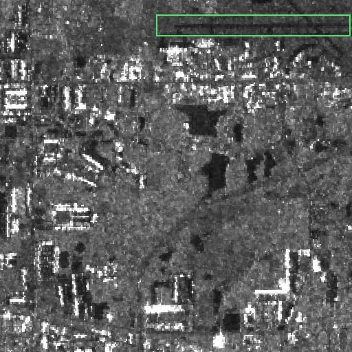
TerraMind matched: 1, missed: 0, wrong_class: 0, duplicate: 0, localization: 7
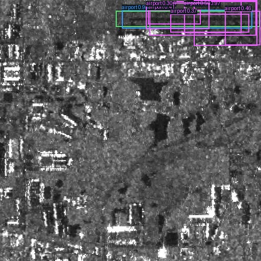
ViT_loss1 matched: 1, missed: 0, wrong_class: 0, duplicate: 0, localization: 5
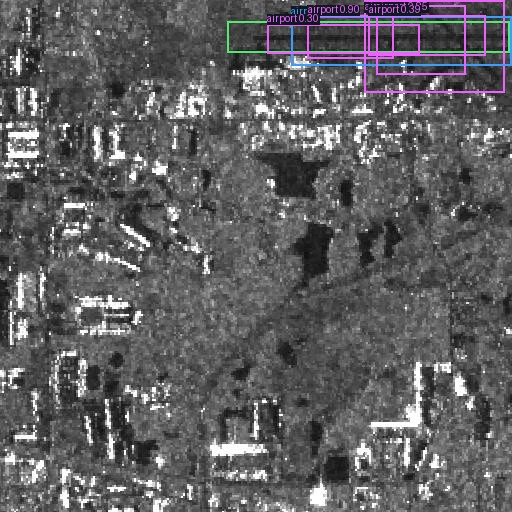
ViT_loss2 matched: 1, missed: 0, wrong_class: 0, duplicate: 0, localization: 9
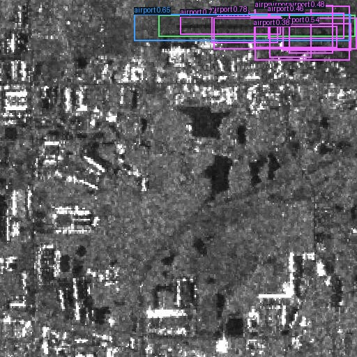
Image 2259: bridge — 4 objects images/02259.png
Ground truth only — correct boxes Class: bridge; 4 annotated objects. All boxes are green.
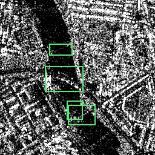
TerraMind matched: 2, missed: 2, wrong_class: 0, duplicate: 0, localization: 10
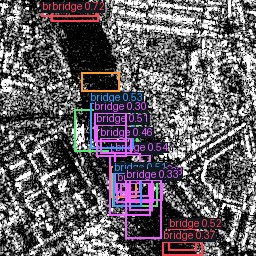
ViT_loss1 matched: 3, missed: 1, wrong_class: 0, duplicate: 3, localization: 30
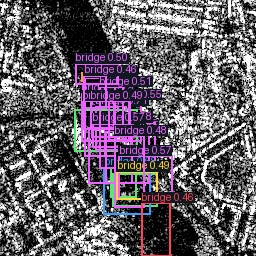
ViT_loss2 matched: 3, missed: 1, wrong_class: 0, duplicate: 2, localization: 27
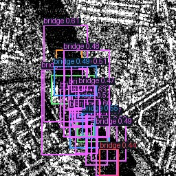
Image 160: harbor — 1 objects images/00160.png
Ground truth only — correct boxes Class: harbor; 1 annotated objects. All boxes are green.
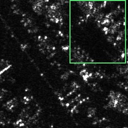
TerraMind matched: 1, missed: 0, wrong_class: 0, duplicate: 0, localization: 4
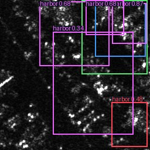
ViT_loss1 matched: 1, missed: 0, wrong_class: 0, duplicate: 0, localization: 4
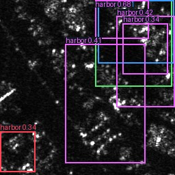
ViT_loss2 matched: 1, missed: 0, wrong_class: 0, duplicate: 0, localization: 6
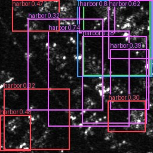
Image 897: playground — 1 objects images/00897.jpg
Ground truth only — correct boxes Class: playground; 1 annotated objects. All boxes are green.
TerraMind matched: 0, missed: 1, wrong_class: 0, duplicate: 0, localization: 1
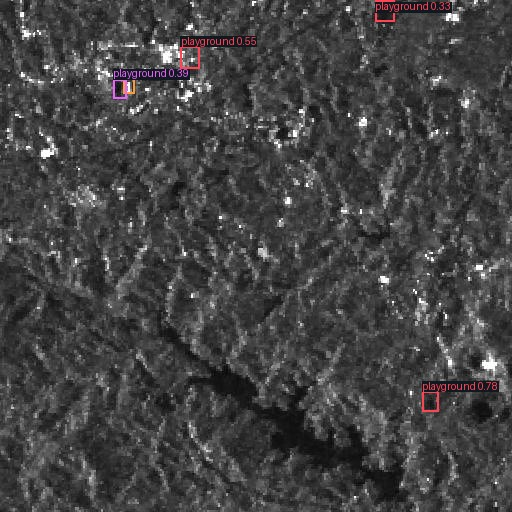
ViT_loss1 matched: 0, missed: 1, wrong_class: 0, duplicate: 0, localization: 1
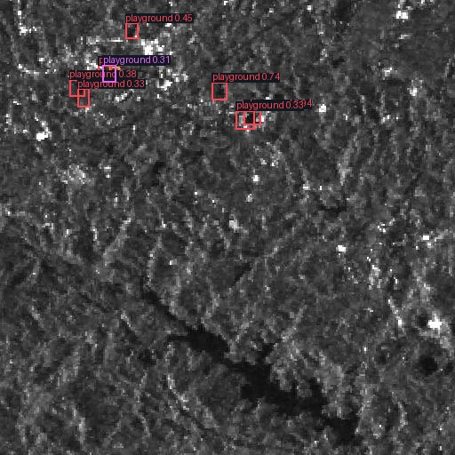
ViT_loss2 matched: 0, missed: 1, wrong_class: 0, duplicate: 0, localization: 2
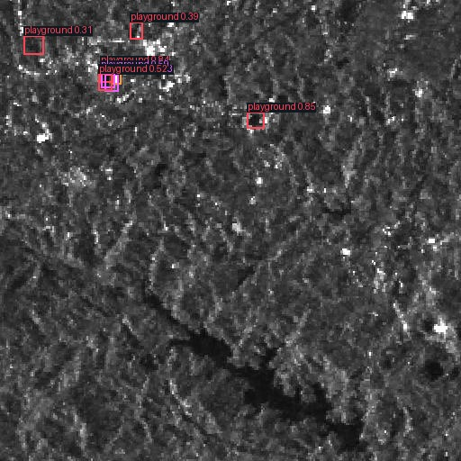
Image 2501: ship — 1 objects images/02501.jpg
Ground truth only — correct boxes Class: ship; 1 annotated objects. All boxes are green.
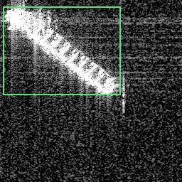
TerraMind matched: 1, missed: 0, wrong_class: 0, duplicate: 1, localization: 1
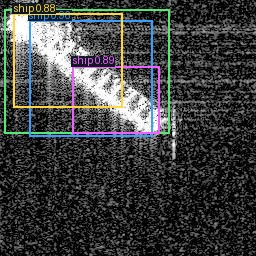
ViT_loss1 matched: 0, missed: 1, wrong_class: 0, duplicate: 0, localization: 5
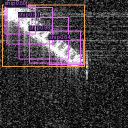
ViT_loss2 matched: 1, missed: 0, wrong_class: 0, duplicate: 0, localization: 6
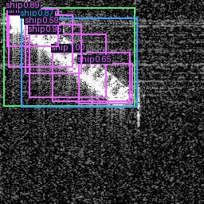
Image 2856: bridge — 1 objects images/02856.png
Ground truth only — correct boxes Class: bridge; 1 annotated objects. All boxes are green.
TerraMind matched: 1, missed: 0, wrong_class: 0, duplicate: 0, localization: 2
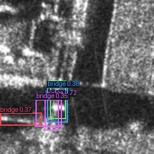
ViT_loss1 matched: 1, missed: 0, wrong_class: 0, duplicate: 1, localization: 4
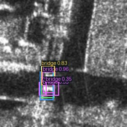
ViT_loss2 matched: 1, missed: 0, wrong_class: 0, duplicate: 0, localization: 6
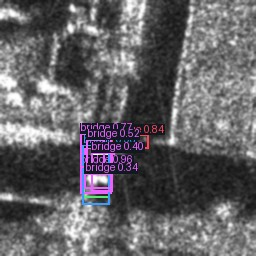
Image 4962: bridge — 2 objects images/04962.jpg
Ground truth only — correct boxes Class: bridge; 2 annotated objects. All boxes are green.
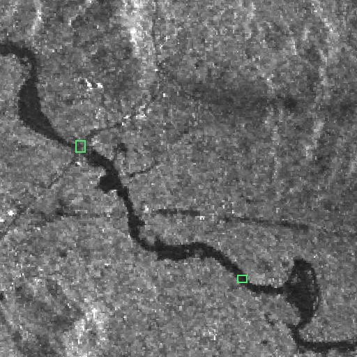
TerraMind matched: 0, missed: 2, wrong_class: 0, duplicate: 0, localization: 4
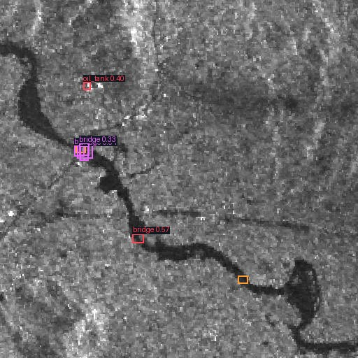
ViT_loss1 matched: 0, missed: 2, wrong_class: 0, duplicate: 0, localization: 0
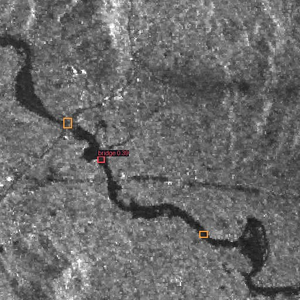
ViT_loss2 matched: 0, missed: 2, wrong_class: 0, duplicate: 0, localization: 1
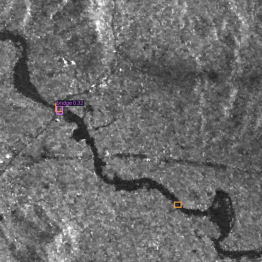
Image 5698: playground — 1 objects images/05698.jpg
Ground truth only — correct boxes Class: playground; 1 annotated objects. All boxes are green.
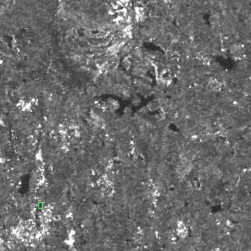
TerraMind matched: 0, missed: 1, wrong_class: 0, duplicate: 0, localization: 2
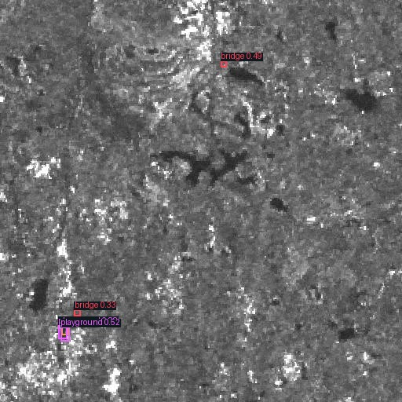
ViT_loss1 matched: 0, missed: 1, wrong_class: 0, duplicate: 0, localization: 0
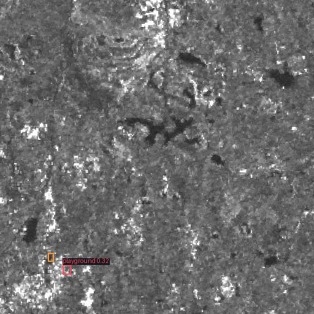
ViT_loss2 matched: 1, missed: 0, wrong_class: 0, duplicate: 0, localization: 2
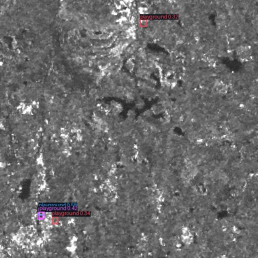
Image 6740: playground — 1 objects images/06740.jpg
Ground truth only — correct boxes Class: playground; 1 annotated objects. All boxes are green.
TerraMind matched: 0, missed: 1, wrong_class: 0, duplicate: 0, localization: 2
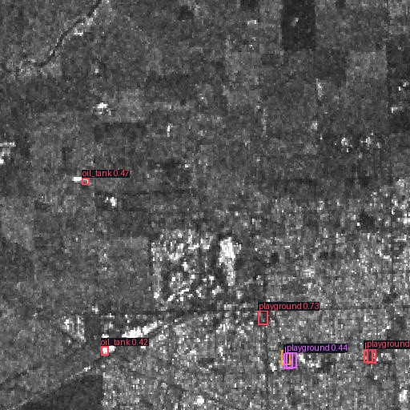
ViT_loss1 matched: 0, missed: 1, wrong_class: 0, duplicate: 0, localization: 0
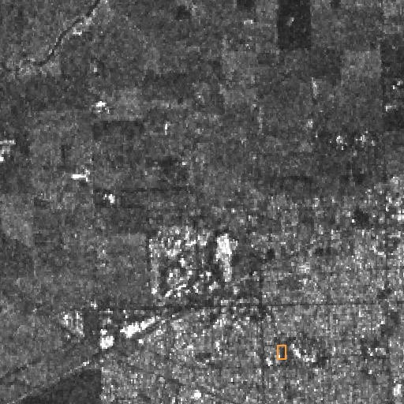
ViT_loss2 matched: 0, missed: 1, wrong_class: 0, duplicate: 0, localization: 0
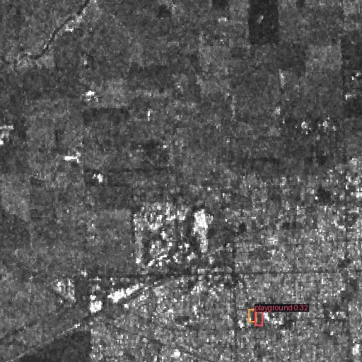
Image 35: wind_turbine — 1 objects images/00035.jpg
Ground truth only — correct boxes Class: wind_turbine; 1 annotated objects. All boxes are green.
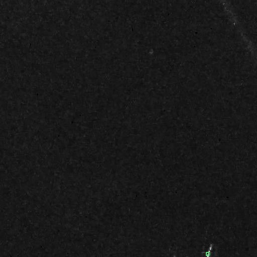
TerraMind matched: 0, missed: 1, wrong_class: 0, duplicate: 0, localization: 1
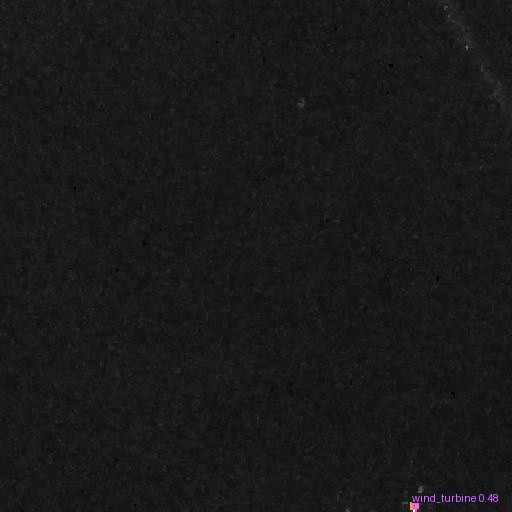
ViT_loss1 matched: 1, missed: 0, wrong_class: 0, duplicate: 1, localization: 0
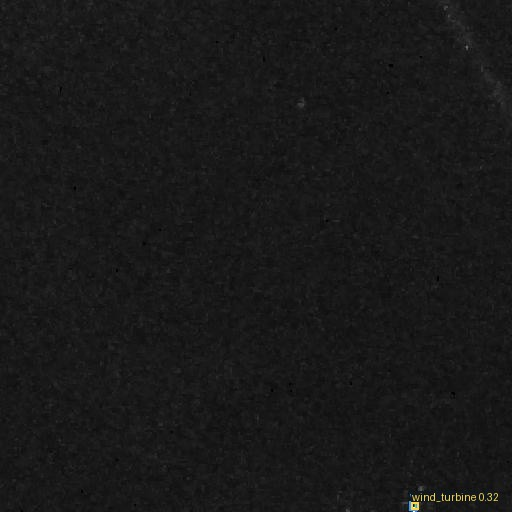
ViT_loss2 matched: 1, missed: 0, wrong_class: 0, duplicate: 0, localization: 0
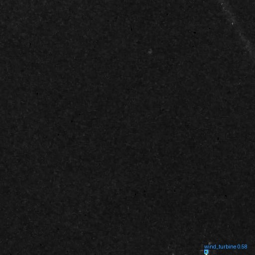
Image 1705: airport — 1 objects images/01705.jpg
Ground truth only — correct boxes Class: airport; 1 annotated objects. All boxes are green.
TerraMind matched: 1, missed: 0, wrong_class: 0, duplicate: 0, localization: 5
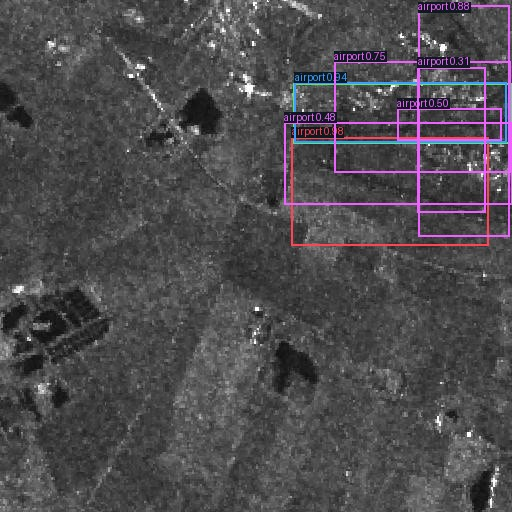
ViT_loss1 matched: 1, missed: 0, wrong_class: 0, duplicate: 1, localization: 3
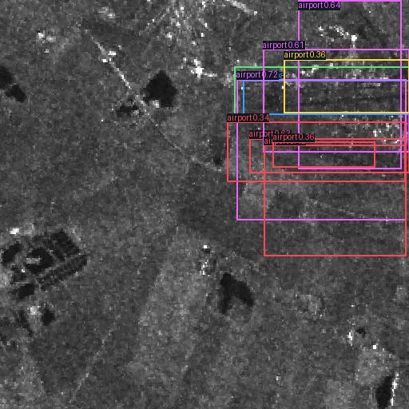
ViT_loss2 matched: 1, missed: 0, wrong_class: 0, duplicate: 0, localization: 2
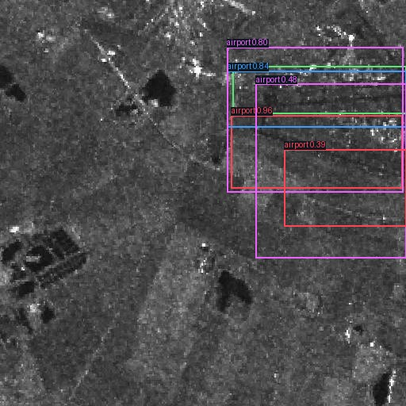
Image 3707: wind_turbine — 1 objects images/03707.jpg
Ground truth only — correct boxes Class: wind_turbine; 1 annotated objects. All boxes are green.
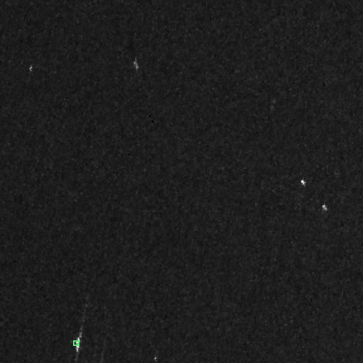
TerraMind matched: 0, missed: 1, wrong_class: 0, duplicate: 0, localization: 1
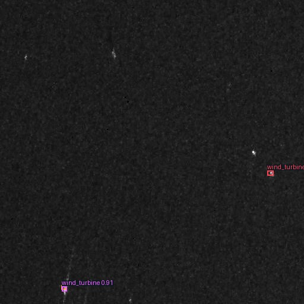
ViT_loss1 matched: 1, missed: 0, wrong_class: 0, duplicate: 1, localization: 0
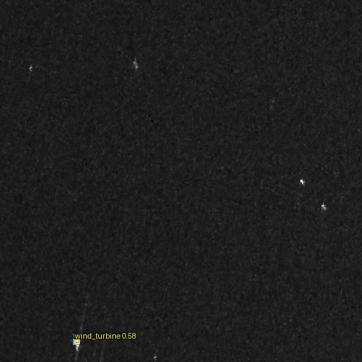
ViT_loss2 matched: 1, missed: 0, wrong_class: 0, duplicate: 0, localization: 0
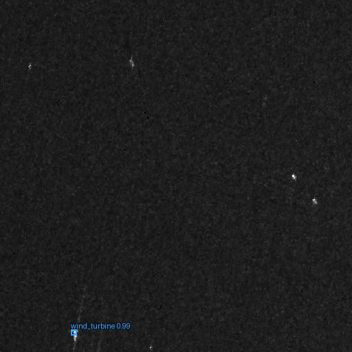
Image 5633: ship — 1 objects images/05633.jpg
Ground truth only — correct boxes Class: ship; 1 annotated objects. All boxes are green.
TerraMind matched: 0, missed: 1, wrong_class: 0, duplicate: 0, localization: 4
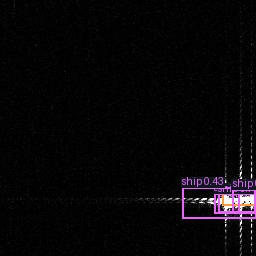
ViT_loss1 matched: 0, missed: 1, wrong_class: 0, duplicate: 0, localization: 3
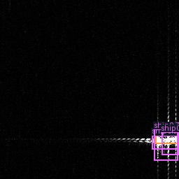
ViT_loss2 matched: 0, missed: 1, wrong_class: 0, duplicate: 0, localization: 2
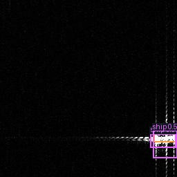
Image 8887: ship — 1 objects images/08887.jpg
Ground truth only — correct boxes Class: ship; 1 annotated objects. All boxes are green.
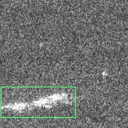
TerraMind matched: 1, missed: 0, wrong_class: 0, duplicate: 0, localization: 2
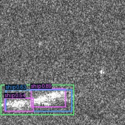
ViT_loss1 matched: 1, missed: 0, wrong_class: 0, duplicate: 0, localization: 0
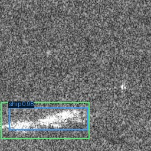
ViT_loss2 matched: 1, missed: 0, wrong_class: 1, duplicate: 0, localization: 3
Image 3471: wind_turbine — 11 objects images/03471.jpg
Ground truth only — correct boxes Class: wind_turbine; 11 annotated objects. All boxes are green.
TerraMind matched: 5, missed: 6, wrong_class: 0, duplicate: 0, localization: 19
ViT_loss1 matched: 7, missed: 4, wrong_class: 0, duplicate: 2, localization: 13
ViT_loss2 matched: 3, missed: 8, wrong_class: 0, duplicate: 1, localization: 19
Image 6119: oil_tank — 5 objects images/06119.png
Ground truth only — correct boxes Class: oil_tank; 5 annotated objects. All boxes are green.
TerraMind matched: 2, missed: 3, wrong_class: 0, duplicate: 1, localization: 5
ViT_loss1 matched: 2, missed: 3, wrong_class: 0, duplicate: 0, localization: 8
ViT_loss2 matched: 1, missed: 4, wrong_class: 0, duplicate: 0, localization: 7
Image 6208: airport — 2 objects images/06208.jpg
Ground truth only — correct boxes Class: airport; 2 annotated objects. All boxes are green.
TerraMind matched: 2, missed: 0, wrong_class: 0, duplicate: 2, localization: 7
ViT_loss1 matched: 2, missed: 0, wrong_class: 0, duplicate: 0, localization: 4
ViT_loss2 matched: 2, missed: 0, wrong_class: 0, duplicate: 0, localization: 3
Image 1602: oil_tank — 7 objects images/01602.jpg
Ground truth only — correct boxes Class: oil_tank; 7 annotated objects. All boxes are green.
TerraMind matched: 2, missed: 5, wrong_class: 0, duplicate: 0, localization: 1
ViT_loss1 matched: 1, missed: 6, wrong_class: 0, duplicate: 0, localization: 7
ViT_loss2 matched: 2, missed: 5, wrong_class: 0, duplicate: 0, localization: 6
Image 2268: oil_tank — 8 objects images/02268.jpg
Ground truth only — correct boxes Class: oil_tank; 8 annotated objects. All boxes are green.
TerraMind matched: 0, missed: 8, wrong_class: 0, duplicate: 0, localization: 2
ViT_loss1 matched: 0, missed: 8, wrong_class: 0, duplicate: 0, localization: 0
ViT_loss2 matched: 0, missed: 8, wrong_class: 0, duplicate: 0, localization: 0
Image 8934: harbor — 3 objects images/08934.png
Ground truth only — correct boxes Class: harbor; 3 annotated objects. All boxes are green.
TerraMind matched: 2, missed: 1, wrong_class: 0, duplicate: 0, localization: 2
ViT_loss1 matched: 1, missed: 2, wrong_class: 0, duplicate: 1, localization: 8
ViT_loss2 matched: 1, missed: 2, wrong_class: 0, duplicate: 0, localization: 1
Image 4097: harbor — 2 objects images/04097.png
Ground truth only — correct boxes Class: harbor; 2 annotated objects. All boxes are green.
TerraMind matched: 2, missed: 0, wrong_class: 0, duplicate: 1, localization: 6
ViT_loss1 matched: 2, missed: 0, wrong_class: 0, duplicate: 0, localization: 1
ViT_loss2 matched: 2, missed: 0, wrong_class: 0, duplicate: 0, localization: 1
Image 762: aircraft — 1 objects images/00762.jpg
Ground truth only — correct boxes Class: aircraft; 1 annotated objects. All boxes are green.
TerraMind matched: 0, missed: 1, wrong_class: 0, duplicate: 0, localization: 1
ViT_loss1 matched: 0, missed: 1, wrong_class: 0, duplicate: 0, localization: 1
ViT_loss2 matched: 0, missed: 1, wrong_class: 0, duplicate: 0, localization: 2
Image 1780: aircraft — 1 objects images/01780.jpg
Ground truth only — correct boxes Class: aircraft; 1 annotated objects. All boxes are green.
TerraMind matched: 1, missed: 0, wrong_class: 0, duplicate: 0, localization: 3
ViT_loss1 matched: 0, missed: 1, wrong_class: 0, duplicate: 0, localization: 1
ViT_loss2 matched: 1, missed: 0, wrong_class: 0, duplicate: 0, localization: 1
Image 6620: aircraft — 1 objects images/06620.jpg
Ground truth only — correct boxes Class: aircraft; 1 annotated objects. All boxes are green.
TerraMind matched: 0, missed: 1, wrong_class: 0, duplicate: 0, localization: 2
ViT_loss1 matched: 1, missed: 0, wrong_class: 0, duplicate: 0, localization: 1
ViT_loss2 matched: 0, missed: 1, wrong_class: 0, duplicate: 0, localization: 2
Image 6817: car — 4 objects images/06817.jpg
Ground truth only — correct boxes Class: car; 4 annotated objects. All boxes are green.
TerraMind matched: 4, missed: 0, wrong_class: 0, duplicate: 0, localization: 4
ViT_loss1 matched: 4, missed: 0, wrong_class: 0, duplicate: 1, localization: 4
ViT_loss2 matched: 4, missed: 0, wrong_class: 0, duplicate: 1, localization: 6
Image 1654: car — 14 objects images/01654.jpg
Ground truth only — correct boxes Class: car; 14 annotated objects. All boxes are green.
TerraMind matched: 13, missed: 1, wrong_class: 0, duplicate: 3, localization: 7
ViT_loss1 matched: 10, missed: 4, wrong_class: 0, duplicate: 1, localization: 17
ViT_loss2 matched: 8, missed: 6, wrong_class: 0, duplicate: 2, localization: 9
Image 8415: car — 6 objects images/08415.jpg
Ground truth only — correct boxes Class: car; 6 annotated objects. All boxes are green.
TerraMind matched: 4, missed: 2, wrong_class: 0, duplicate: 0, localization: 2
ViT_loss1 matched: 3, missed: 3, wrong_class: 0, duplicate: 0, localization: 3
ViT_loss2 matched: 3, missed: 3, wrong_class: 0, duplicate: 0, localization: 5
Image 1335: bridge — 4 objects images/01335.jpg
Ground truth only — correct boxes Class: bridge; 4 annotated objects. All boxes are green.
TerraMind matched: 0, missed: 4, wrong_class: 0, duplicate: 0, localization: 4
ViT_loss1 matched: 0, missed: 4, wrong_class: 0, duplicate: 0, localization: 5
ViT_loss2 matched: 0, missed: 4, wrong_class: 0, duplicate: 0, localization: 5
Image 2221: bridge — 4 objects images/02221.jpg
Ground truth only — correct boxes Class: bridge; 4 annotated objects. All boxes are green.
TerraMind matched: 1, missed: 3, wrong_class: 0, duplicate: 0, localization: 9
ViT_loss1 matched: 0, missed: 4, wrong_class: 0, duplicate: 0, localization: 0
ViT_loss2 matched: 0, missed: 4, wrong_class: 0, duplicate: 0, localization: 3
Image 5344: bridge — 8 objects images/05344.jpg
Ground truth only — correct boxes Class: bridge; 8 annotated objects. All boxes are green.
TerraMind matched: 2, missed: 6, wrong_class: 0, duplicate: 0, localization: 16
ViT_loss1 matched: 3, missed: 5, wrong_class: 0, duplicate: 1, localization: 20
ViT_loss2 matched: 5, missed: 3, wrong_class: 0, duplicate: 1, localization: 11
Image 1030: bridge — 1 objects images/01030.png
Ground truth only — correct boxes Class: bridge; 1 annotated objects. All boxes are green.
TerraMind matched: 1, missed: 0, wrong_class: 0, duplicate: 0, localization: 4
ViT_loss1 matched: 1, missed: 0, wrong_class: 0, duplicate: 0, localization: 1
ViT_loss2 matched: 1, missed: 0, wrong_class: 0, duplicate: 1, localization: 4
Image 1444: playground — 1 objects images/01444.jpg
Ground truth only — correct boxes Class: playground; 1 annotated objects. All boxes are green.
TerraMind matched: 0, missed: 1, wrong_class: 0, duplicate: 0, localization: 1
ViT_loss1 matched: 0, missed: 1, wrong_class: 0, duplicate: 0, localization: 1
ViT_loss2 matched: 0, missed: 1, wrong_class: 0, duplicate: 0, localization: 1
Image 2023: playground — 1 objects images/02023.jpg
Ground truth only — correct boxes Class: playground; 1 annotated objects. All boxes are green.
TerraMind matched: 0, missed: 1, wrong_class: 0, duplicate: 0, localization: 0
ViT_loss1 matched: 0, missed: 1, wrong_class: 0, duplicate: 0, localization: 0
ViT_loss2 matched: 0, missed: 1, wrong_class: 0, duplicate: 0, localization: 1
Image 3153: bridge — 1 objects images/03153.png
Ground truth only — correct boxes Class: bridge; 1 annotated objects. All boxes are green.
TerraMind matched: 1, missed: 0, wrong_class: 0, duplicate: 1, localization: 4
ViT_loss1 matched: 1, missed: 0, wrong_class: 0, duplicate: 0, localization: 2
ViT_loss2 matched: 1, missed: 0, wrong_class: 0, duplicate: 0, localization: 1
Image 5470: bridge — 2 objects images/05470.jpg
Ground truth only — correct boxes Class: bridge; 2 annotated objects. All boxes are green.
TerraMind matched: 0, missed: 2, wrong_class: 0, duplicate: 0, localization: 2
ViT_loss1 matched: 0, missed: 2, wrong_class: 0, duplicate: 0, localization: 2
ViT_loss2 matched: 1, missed: 1, wrong_class: 0, duplicate: 0, localization: 5
Image 5540: bridge — 1 objects images/05540.jpg
Ground truth only — correct boxes Class: bridge; 1 annotated objects. All boxes are green.
TerraMind matched: 0, missed: 1, wrong_class: 0, duplicate: 0, localization: 1
ViT_loss1 matched: 0, missed: 1, wrong_class: 0, duplicate: 0, localization: 0
ViT_loss2 matched: 0, missed: 1, wrong_class: 0, duplicate: 0, localization: 0